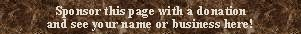

|
Cornetti unknown |  |
Mentioned only by Williams, who says: �Cornetti at Görlitz (Casparini's tender of 1695) had both meanings [a compound stop and a reed]: an Ow [Oberwerk] Mixture of 8.10.12 ranks, and a pedal regal 4'.�
See Cornet, Cornett.Osiris contains three examples:
Cornetti II 2' + 1-3/5', Drittes Clavir (Discant); Monastery Church, Zwettl, Austria; Egedacher 1731.
Cornetti II-IV, Hauptwerk; Dreifaltigkeitskirche, Liepaja/Libau (Lettland), Latvia; Grueneberg 1885.
Cornetti IV, Brustwerk; Dreifaltigkeitskirche, Liepaja/Libau (Lettland), Latvia; Grueneberg 1885. This stop was part of an earlier instrument by Contius, 1779.
|
Original website compiled by Edward L. Stauff. For educational use only. Corneta.html - Last updated 9 January 2003. |
Home Full Index |